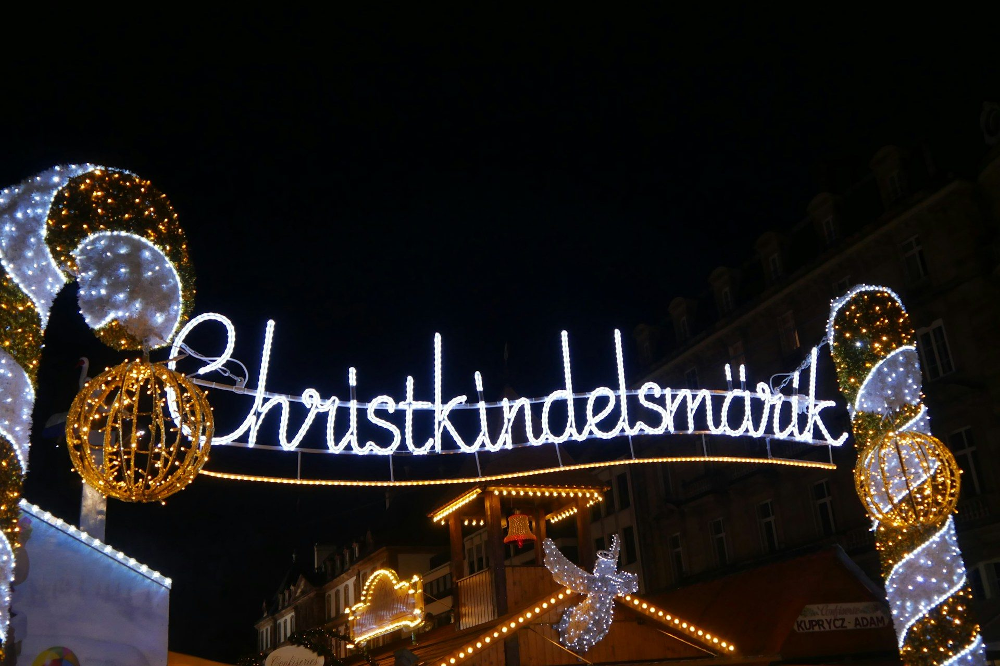

Alsace Christmas markets 2026: dates and itinerary
Strasbourg, Colmar, Riquewihr and Kaysersberg: four markets, different dates, and shuttle buses to go from one to the next without a car.
Photo: Alexis Brandner / Unsplash
Alsace is France’s Christmas market region. The oldest, in Strasbourg, dates back to 1570. But the dates are not the same everywhere: some markets close on 20 December, others only open at weekends. Here is the 2026 calendar to plan your trip.
The 2026 dates
- 23 NovColmar
Six markets in the old town, until 29 December; the food market and the big wheel until 3 January 2027.
- 27 NovStrasbourg
The Christkindelsmärik on Place Broglie, until 24 December, from about 11.30am to 9pm.
- 27 NovRiquewihr
Every day until 20 December, from 10am.
- 27 NovKaysersberg
Friday to Sunday only, four weekends until 20 December, 10am to 8pm.
Entry is free at all these markets.
Without a car: the Christmas shuttles
From 27 November to 20 December 2026, Christmas shuttle buses leave Colmar station for the markets in the nearby villages, including Kaysersberg and Riquewihr. It is the easiest option: village car parks are full at weekends.
Our two-day itinerary
- Day 1, Strasbourg: the Place Broglie market and the giant tree on Place Kléber in the morning, before the crowds, then the cathedral and La Petite France. Take the train to Colmar in the late afternoon.
- Day 2, Colmar and the villages: the Christmas shuttle to Riquewihr in the morning, then Kaysersberg if it is a Friday, Saturday or Sunday. Back in Colmar to see Little Venice lit up in the evening.
Our tips
- Avoid Saturdays: it is the busiest day everywhere. Come on a weekday if you can.
- Book your hotel very early: in Strasbourg, rooms for December weekends go in the summer.
- Do not aim for the last week in the villages: Riquewihr and Kaysersberg close on 20 December.
Our market guides


Tours and activities
Guided tours of the markets, a cruise on the Ill or a boat ride in Little Venice: book before you go.
-
Christmas market guided tours
Guided walks around the Grande Île and tastings.
-
Little Venice boat rides
A trip on the Lauch in the heart of the old town.
Partner links.
Frequently asked questions
When do the Alsace Christmas markets open in 2026?
Colmar opens on Monday 23 November 2026; Strasbourg, Riquewihr and Kaysersberg on Friday 27 November.
Which Christmas market stays open the longest?
Colmar: its markets close on 29 December 2026, but the food market and the big wheel stay open until 3 January 2027.
Can you visit the Alsace Christmas markets without a car?
Yes: trains link Strasbourg and Colmar, and Christmas shuttle buses run from Colmar station to the villages from 27 November to 20 December 2026.